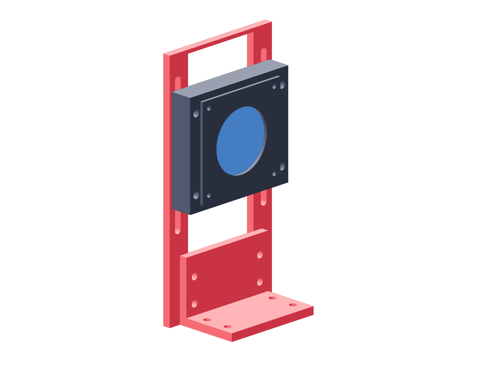

Observation / lens modules150 / 179
Assemble the removable lens stand
A preformed aluminum angle and windowed upright support the cassette separately from the camera. Vertical slots align it to the parked level optical axis.
AddPer view: angle / upright · 8 M5 × 25 / 16 washers / 8 nuts · 4 M5 × 40 cassette bolts / 8 washers / 4 nuts
Tools / setupAngle face projections · 4 mm hex · 8 mm wrench

- Transfer the separate foot/upright projections onto the intact 50.8 mm metal angle; drill each face separately.
- Bolt the upright to the angle and start all four joints before seating opposite pairs.
- Start the cassette's four slot bolts loosely with washers; set it to the parked camera center height.
- Keep this entire angle/upright/cassette module off the camera carriage until startup has completed.
Ready when
The module stays rigid on its angle and its optical openings clear the real lens throughout slot adjustment. A flat substitute angle, blocked aperture or tilted cassette fails the stand. Correct its metal geometry before installation.